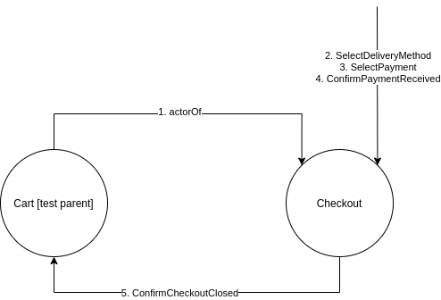

Programowanie reaktywne w jezyku Scala
Uzycie akka testkit w ScalaTest
- Jako narzędzia do testowania używamy ScalaTest
- ScalaTest oferuje różne style testowania czyli sposoby deklarowania testów. W przykładzie wykorzystano naturalny styl WordSpec (trait WordSpecLike)
- Trait BeforeAndAfterAll zapewnia funkcje do wykonania przed i po zestawie testów. W przykładzie pokazano, jak wykorzystać funkcje afterAll do zamknięcia systemu aktorów po zakonczeniu testów.
Testowanie aktorów
Do testowania aktorów wykorzystujemy moduł akka-testkit. W przykładzie rozszerzana jest klasa TestKit inicjalizowana systemem aktorów do testowania.- Testowanie aktora w jednym wątku. Testowanie stanu wewnętrznego aktora może odbywać się przy pomocy TestActorRef, wtedy aktor jest wywoływany w tym samym wątku, co cały test, ale dzięki temu możemy bezpiecznie przetestować zmiany jego wewnętrznego stanu. Przykład testowania wewnętrznego stanu licznika.
- Wielowątkowe testowanie poprzez wiadomości .
- Akka TestKit tworzy wewnętrznego testującego aktora (o nawie testActor), który służy do komunikacji z testowanymi aktorami
- Odpowiedzi od testowanych aktorów są kolejkowane przez testującego aktora i mogą być badane przy użyciu asercji takich jak expectMsg.
- Jeśli aktor wysyła wiadomości do więcej niż jednego aktora możemy przetestować to używając mechanizmu TestProbe.
- Uzycie traitu ImplicitSender powoduje, że aktor testujący jest domyślnie używany jako ten, który wysyła wiadomości do testowanych aktorów.
- Przykład testuje aktora Toggle z poprzedniego przykladu z laboratorium 2
- W zestawie zawarte są trzy testy w stylu WordSpec
Jak uruchomić testy?
- Pobrać projekt potrzebny do wykonania ćwiczenia.
git clone https://github.com/agh-reactive/reactive-lab3
sbt run
sbt test
Zadanie
Szablon do zadań z Laboratorium 3: https://github.com/agh-reactive/reactive-scala-labs-templates/tree/lab-3 (proszę pamiętać o scaleniu rozwiązań z laboratorium numer 2)- (20 pkt)
- Prosze dodać do systemu aukcyjnego aktorow OrderManager i Payment, a następnie utworzyć system aktorów
działający zgodnie z diagramem:

- Napisać testy dla aktora CartActor. Testy powinny zawierać:
- testowanie synchroniczne - test zmiany zawartości koszyka przy użyciu TestActorRef
- testowanie asynchroniczne za pomocą aktora testActor i asercji typu expectMsg.
- Testy za pomocą Testing Akka Typed
- (10 pkt) Wykorzystując Akka TestKit proszę napisac testy dla aktora Checkout zawierające reakcję na komunikaty wg diagramu poniżej. Zestaw powinien zawierać test relacji rodzic-dziecko w szczególności sprawdzenie, czy CartActor dostaje komunikat CheckoutClosed od testowanego aktora CheckOut (patrz diagram) 
-
(10 pkt)
Uwaga 1: to zadanie ma dwie wersje -- dla typowanej i klasycznej wersji aktora OrderManager. Wybrać należy jedno z poniższych zadań, w zależności od wybranej implementacji.
Uwaga 2: rozwiązanie tego zadania powinno być zrealizowane w osobnej gałęzi (szczegóły w instrukcji do przesyłania zadania).
- (Dla implementacji typowanej) Proszę w aktorze TypedOrderManager zastosować wzorzec Adapted Response.
- (Dla implementacji klasycznej) Proszę przetestować mieszanie aktorów klasycznych (OrderManager) i typowanych (TypedCartActor i TypedCheckout. Więcej informacji: coexistence
Bartosz Baliś, balis at agh edu pl
Maciej Malawski, malawski at agh edu pl
Katarzyna Rycerz, kzajac at agh edu pl
Krzysztof Borowski, kborowski at agh edu pl